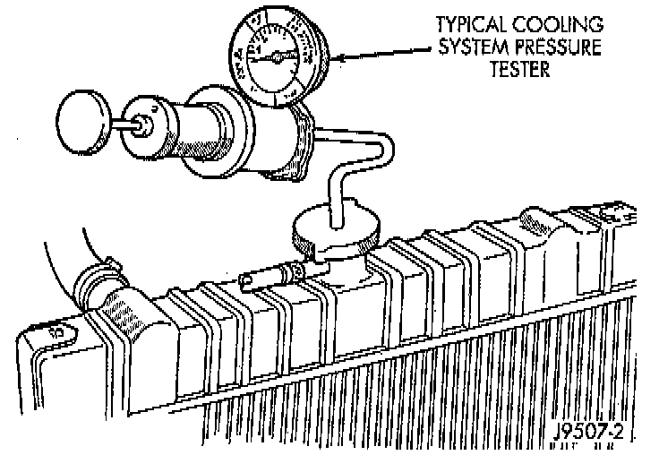

Pressure Tester Method

NOTE: The engine should be at normal operating temperature. Recheck the system cold if cause of coolant loss is not located during the warm engine examination.
WARNING: HOT, PRESSURIZED COOLANT CAN CAUSE INJURY BY SCALDING.
1. Carefully remove radiator pressure cap from filler neck and check coolant level. Push down on cap to disengage it from stop tabs.
2. Wipe inside of filler neck and examine lower inside sealing seat for nicks, cracks, paint, dirt and solder residue. Inspect radiator to reserve/overflow tank hose for internal obstructions. Insert a wire through the hose to be sure it is not obstructed.
3. Inspect cams on outside of filler neck. If cams are bent, seating of pressure cap valve and tester seal will be affected. Replace cap if cams are bent.
4. Attach pressure tester (7700 or an equivalent) to radiator filler neck.
5. Operate tester pump to apply 124 kPa (18 psi) pressure to system. If hoses enlarge excessively or bulges while testing, replace as necessary. Observe gauge pointer and determine condition of cooling system according to following criteria:
Holds Steady: If pointer remains steady for two minutes, serious coolant leaks are not present in system. However, there could be an internal leak that does not appear with normal system test pressure. If it is certain that coolant is being lost and leaks cannot be detected, inspect for interior leakage or perform Internal Leakage Test.
Drops Slowly: Indicates a small leak or seepage is occurring. Examine all connections for seepage or slight leakage with a flashlight. Inspect radiator, hoses, gasket edges and heater. Seal small leak holes with a Sealer Lubricant (or equivalent). Repair leak holes and inspect system again with pressure applied.
Drops Quickly: Indicates that serious leakage is occurring. Examine system for external leakage. If leaks are not visible, inspect for internal leakage. Large radiator leak holes should be repaired by a reputable radiator repair shop.